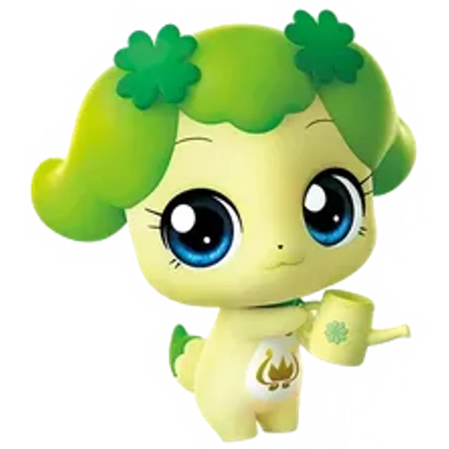

차차핑
Chachaping
1기 감정
로열
어떤 힘든 상황이 와도 좌절하지 않는 희망의 티니핑! 항상 낙관적으로 생각하는 너그럽고 믿음직스러운 배려의 아이콘.
- 기수
- 1기 감정
- 등급
- 로열
- 성별
- 여성
- 감정·상징
- 희망
- 심볼
- 네잎클로버
- 소품
- 물뿌리개
- 좋아하는 것
- 화초에 물 주기, 식물 보살피기, 꽃 향기 맡기, 격려하기
- 싫어하는 것
- 꽃을 꺾거나 잔디를 밟는 등의 행동, 부정적인 말과 행동
- 성우
- 이보희